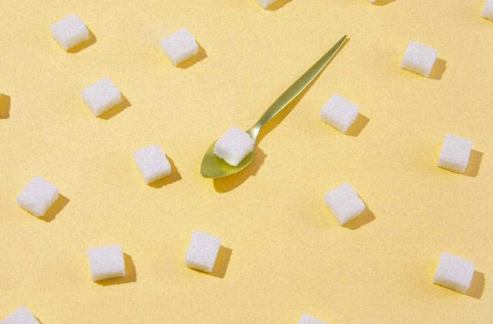
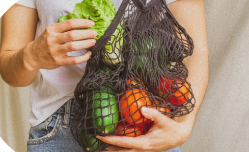

Confused by all the conflicting nutrition advice out there? These simple tips can show you how to plan, enjoy, and stick to a healthy diet.

Eating a healthy diet is not about strict limitations, staying unrealistically thin, or depriving yourself of the foods you love. Rather, it’s about feeling great, having more energy, improving your health, and boosting your mood. Healthy eating doesn’t have to be overly complicated. If you feel overwhelmed by all the conflicting nutrition and diet advice out there, you’re not alone. It seems that for every expert who tells you a certain food is good for you, you’ll find another saying exactly the opposite. The truth is that while some specific foods or nutrients have been shown to have a beneficial effect on mood, it’s your overall dietary pattern that is most important. The cornerstone of a healthy diet should be to replace processed food with real food whenever possible. Eating food that is as close as possible to the way nature made it can make a huge difference to the way you think, look, and feel.
|  |  | |